Before you begin
Enter your details first. Your name and learning evidence will appear in your downloadable activity report.
Suggested learning time: 60 minutes • Work independently unless your teacher gives other instructions.
I Intentions — What will I learn?
At the end of this lesson, you should be able to:
- Describe a force as a push or pull and identify the newton (N) as its unit.
- Distinguish balanced forces from unbalanced forces using everyday situations.
- Interpret and construct simple free-body diagrams using arrows to show direction and relative size.
- Calculate net force in one dimension and explain how unbalanced forces affect speed or direction.
Prior learning: Scientists and engineers analyze forces to predict their effects on movement.
L Learning Experience — Explore and investigate
1. Engage: What is a force?
A force is a push or pull that acts between objects. A force can start or stop motion, speed an object up, slow it down, or change its direction. Forces are measured using a force meter (spring scale) in newtons (N).
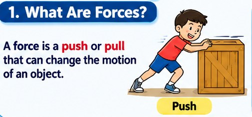
PushWhen you push a classroom door, you apply a force to the door.
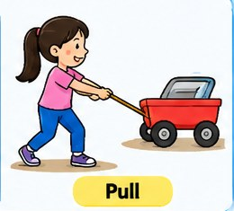
PullWhen you pull a drawer open, you apply a force to the drawer.
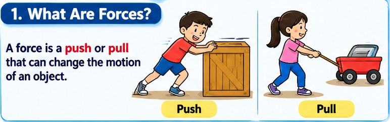
Contact forceYour hand pushes a book across a table; the objects touch.
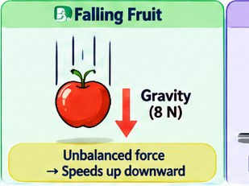
Non-contact forceEarth's gravity pulls a falling fruit downward without touching it.
2. Explain: Balanced vs. unbalanced forces
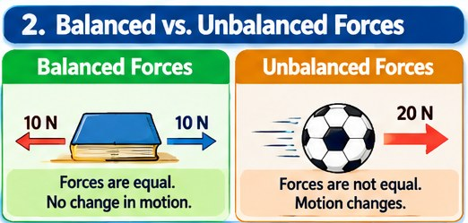
Balanced forces
- Equal in size and opposite in direction (for forces along the same line).
- Net force = 0 N.
- No change in motion: an object remains at rest or continues at constant velocity.
Example: A learner standing still: upward normal force balances downward weight.
Unbalanced forces
- Forces do not cancel; net force is not zero.
- Net force ≠ 0 N.
- Motion changes: speed, direction, or both can change.
Example: A fruit falls and speeds up because gravity is greater than air resistance.
3. More everyday examples
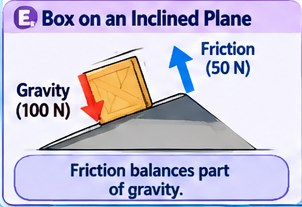
Book resting on a deskDesk pushes upward; gravity pulls downward with equal force. Net force is zero.
BalancedTwo teams pull with equal strength in opposite directions. The rope does not accelerate.
Balanced*The forward push is greater than opposing friction. The cart accelerates forward.
Unbalanced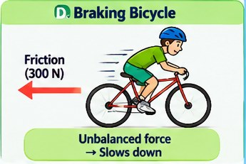
Bicycle brakingBraking force acts opposite the bicycle's motion, making it slow down.
Unbalanced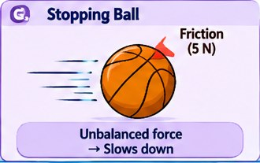
Ball changing directionA sideways kick applies a net force that changes the ball's direction.
Unbalanced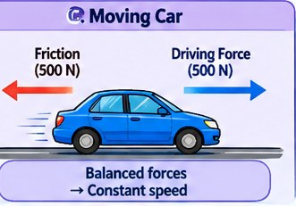
Car at constant velocityDriving force forward balances friction and air resistance backward.
Balanced*In a real tug-of-war, classify the forces on the rope for the stated situation; ground friction and other forces can also matter.
4. Investigate: Free-body diagrams
A free-body diagram (FBD) represents the forces acting on one object. Each arrow points in the force's direction. Longer arrows represent greater forces. Draw only the forces acting on the selected object.
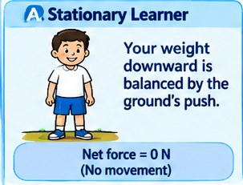
Standing learnerNormal force ↑ 600 N; weight ↓ 600 N. Net force = 0 N.
Gravity ↓ 8 N; air resistance ↑ 3 N. Net force = 5 N downward.
Driving force forward is greater than friction backward. Net force is forward.
Try the force-arrow simulator
Enter two opposite forces. The diagram and net force update automatically.
If the object is free to move, it may accelerate to the right.
More illustrated situations to compare
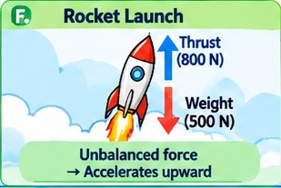
Rocket launchThrust upward is greater than weight, so the rocket accelerates upward.
Unbalanced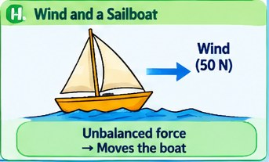
Wind and a sailboatWind exerts a force on the sail and can make the boat move.
UnbalancedA force opposite the ball's motion can slow it down.
Unbalanced5. Guided practice: Calculate net force
For forces acting in opposite directions, subtract the smaller force from the larger force. The net force points in the direction of the larger force.
\(F_{net}=15-9=6\ N\), to the right. The forces are unbalanced.
Learning Activity 1 — Force detectives 8 minutes
Classify each situation. Select balanced or unbalanced, then check your answers.
Learning Activity 2 — Predict the motion 7 minutes
Choose the most likely effect of the net force in each situation.
Learning Activity 3 — Net force challenge 8 minutes
Calculate the net force and choose its direction. Enter the magnitude as a positive number.
1. A box is pushed right with 20 N and friction acts left with 12 N. What is the net force?
2. A cart is pulled left with 18 N and friction acts right with 18 N. What is the net force?
3. Gravity pulls a fruit downward with 10 N while air resistance acts upward with 4 N. What is the net force?
Learning Activity 4 — Build a free-body diagram 7 minutes
Scenario: An object experiences a 6 N force to the right and a 2 N force to the left. Use the simulator above or describe the arrows below.
Self-check: Your response should include a longer right arrow (6 N), a shorter left arrow (2 N), and a net force of 4 N to the right.
A Assessing Learning — Quick check
Answer all 10 questions. Your score will be calculated automatically. Aim for at least 8 out of 10.
0 of 10 answered
Reflection — Think like a scientist
W Ways Forward — What happens next?
If you scored 0–5
Remediation: Review the force definitions and balanced/unbalanced examples. Repeat Activity 1 with a partner or teacher. Practice identifying equal and opposite arrows.
If you scored 6–7
Practice: Revisit the worked examples. Solve additional net-force problems and explain why a moving object can still have balanced forces.
If you scored 8–10
Enrichment: Observe a sport or vehicle movement. Identify the forces and sketch a free-body diagram showing the likely net force.
Lesson reference infographic
Use this visual summary to review the key ideas from the lesson.
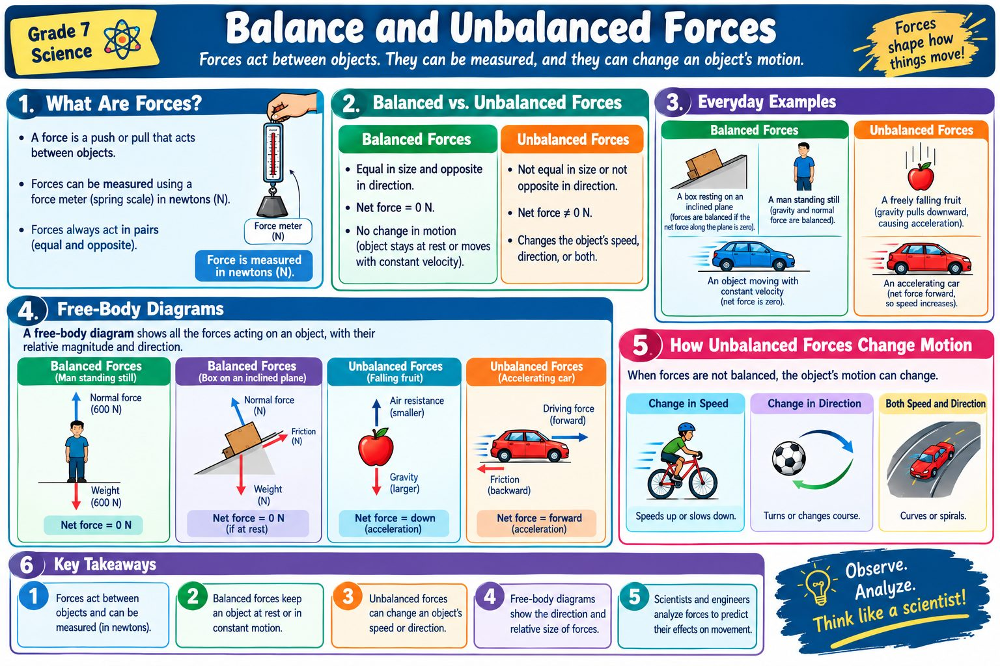
Your learner output
Download your activity record after entering your name and completing the tasks. The file includes your name, section, date, activity responses, quiz score, and reflection. It is saved on your device; it is not automatically sent to your teacher.
Teacher view — ILAW lesson-planning notes and answer key
Intentions
Learning objectives are adapted from the supplied Grade 7 Science worksheet. It targets identifying force and its unit, distinguishing balanced and unbalanced forces, interpreting free-body diagrams, and explaining motion changes. The source file does not provide a curriculum competency code or exact curriculum-guide citation; verify and insert the applicable competency from your school's current Grade 7 Science Budget of Work or curriculum guide.
Learning Experience (suggested 60 minutes)
- Engage and activate prior knowledge: force as push or pull (5 min).
- Explain balanced/unbalanced forces and everyday examples (10 min).
- Model free-body diagrams and use the force-arrow simulator (10 min).
- Guided learner activities 1–4 (30 min).
- Reflection and feedback (5 min).
Assessing Learning
Use activity checks, the 10-item quiz, learner explanations, and reflection as formative evidence. Review both correctness and reasoning.
Ways Forward
Use the learner's results to decide remediation, additional practice, or enrichment. The suggested thresholds in this resource are classroom guidance and may be adjusted to learner context.
Answer key
Activity 1: 1 balanced; 2 unbalanced; 3 balanced; 4 unbalanced; 5 unbalanced; 6 balanced.
Activity 2: 1 speeds up; 2 changes direction; 3 slows down; 4 speeds up downward; 5 continues at constant velocity; 6 accelerates left.
Activity 3: 8 N right; 0 N balanced; 6 N down.
Quiz: 1 B, 2 C, 3 A, 4 B, 5 C, 6 B, 7 A, 8 C, 9 B, 10 A.
Source alignment: The supplied worksheet's worked examples and key ideas are retained. The interactive practice and additional everyday examples are supplementary elaborations for this lesson.